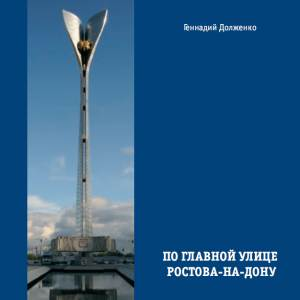

По главной улице Ростова-на-Дону: экскурсия в прошлое и настоящее.Ростов-на-Дону: Донской издательский Дом, 2009. - 108 с.

Аннотация
В путеводителе рассказывается об истории Ростова-на-Дону, о выдающихся зданиях,
учреждениях и памятниках, расположенных по автобусному маршруту № 3, проходящему по самым зна-
чимым местам города, от Главного железнодорожного вокзала до Ростсельмаша.
Книга адресована широкому кругу читателей: как ростовчанам, так и гостям города. Ее будет
интересно прочесть всем, от младших школьников до людей преклонного возраста, кто хочет
узнать о Ростове-на-Дону что-нибудь новое.
Фото - М. Дзябенко
Открыть путеводитель